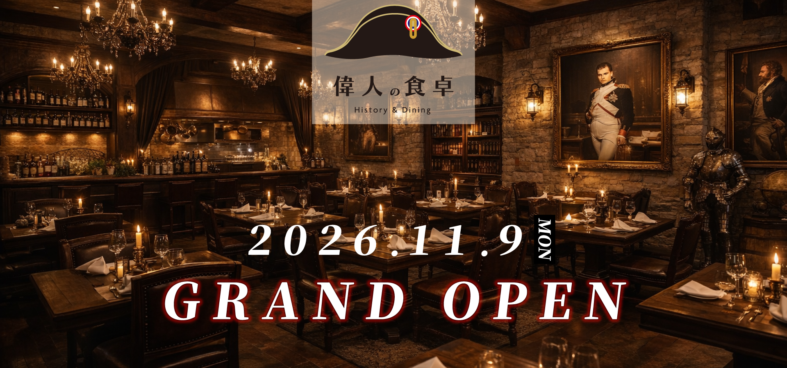

SCROLL
Instagramフォローで 5%OFF
フォローする2026.11.9(Mon)
2026年11月9日、新潟駅前に
「偉人の食卓」がオープンします。
歴史に名を残す偉人たちが愛した料理を
現代の食卓で体験できる
新しい洋食レストランです。
「偉人の食卓」では、歴史に名を残す偉人たちが愛した料理を現代のレシピで再現しています。
ナポレオン、ルイ14世、マリー・アントワネットなど、時代を彩った人物たちの食文化を料理とともに体験できるレストランです。


オーストリアからフランス王室へ嫁いだマリー・アントワネットが、故郷の味を懐かしんで好んだとされる料理。

1800年の「マレンゴの戦い」において、フランス皇帝ナポレオン・ボナパルトがオーストリア軍に勝利した直後に誕生したとされる伝説的な料理。

17世紀フランスの国王ルイ14世が熱狂的に愛したことで知られる、グリーンピースを使った伝統的な料理。
オープン記念キャンペーン
11/9〜11/30の期間中
Instagramをフォローすると
お会計から5%OFF
新潟駅万代口より徒歩5分
偉人たちの食体験を、あなたも。
ご予約はこちらから承っております。